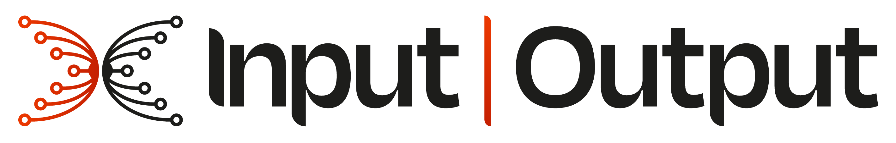

Research & Development · November 2026
Cardano PubSub
From the research we were given to an evidence-backed design, a reference implementation and CIP-0201.
Presented by

William WolffLead · Technical Architect

Mauro JaskelioffRole TBD

Ezequiel PostanSenior Prototyping Engineer
Team

Denis FirsovSenior Formal Engineer
Jesus Diaz VicoApplied Cryptography Lead
Dana AlibrandiProduct Manager
Sandro Coretti-DraytonSenior Research Fellow
Agenda
Today
- Starting pointWhat we delivered · what we were given · the sparse product input
- Research and reframeReview of the proposed architecture · SecureCyclon findings · deriving the design from evidence
- FormalizationFormalizing the problem · five candidate models and their laws
- Reference implementationRust node and simulation framework · AI tooling · experiments and cross-validation
- CIP and open questionsChoosing M4 from both tracks · the CIP and CPS · gaps and open questions
- How we workedOne lesson each · close
1 · Starting point
What we delivered
Speaker: TBD
Placeholder · talking points
- CPS-0038 (problem statement) and CIP-0201 (protocol), submitted 16 Sep 2026
- Numbers assigned by the CIP editors on 29 Sep; review under way
- The arc of this talk, and credit to the wider group
1 · Starting point
What we were given
Speaker: TBD
Placeholder · talking points
- SecureCyclon: Dependable Peer Sampling (ICDCS 2023)
- AUEB's three-layer architecture (D1/D2): peer sampling, navigation, dissemination
- Product documentation: five use cases and requirements
1 · Starting point
The sparse product input
Speaker: TBD
Placeholder · talking points
- Little product steering after the initial use cases
- We narrowed the scope ourselves (28 Apr): IOG alerts → SPOs, SPOs → delegators, dReps → delegators, dApps → users
- Which meant more of our own initial research
2 · Research and reframe
Reviewing the proposed architecture
Speaker: TBD
Placeholder · talking points
- March technical review and AUEB gap analysis
- Missing: incentives, anti-spam, a stated security model
2 · Research and reframe
SecureCyclon findings
Speaker: TBD
Placeholder · talking points
- A silent adversary biases views without a single protocol violation
- None of the nine defences fire
- Peer sampling set aside for an on-chain registry
2 · Research and reframe
Deriving the design from evidence
Speaker: TBD
Placeholder · talking points
- One bar: a good graph, where every honest publisher reaches every honest node
- Phase 2 starts in July
3 · Formalization
Formalizing the problem
Speaker: TBD
Placeholder · talking points
- Silent Byzantine fraction μ, epoch failure probability p_bad, target δ
- Churn folded in as a shift in μ
3 · Formalization
Five candidate models and their laws
Speaker: TBD
Placeholder · talking points
- M1 push · M2 pull · M3 pull + publishing links · M4 bidirectional · M5 directed
- Closed forms for coverage, messages, hops, degrees, eclipse cost, re-provisioning, transmission loss
4 · Reference implementation
Rust node and simulation framework
Speaker: TBD
Placeholder · talking points
- Topics, signed envelopes, registries, event loop, a strategy per model
- Deterministic multicore simulation running the real node logic
4 · Reference implementation
AI tooling
Speaker: TBD
Placeholder · talking points
- Spec Kit: specify → plan → tasks → implement, under a project constitution
- 16 feature specs, ADRs and analysis ledgers
- Claude as an independent second reviewer; where humans had to check
4 · Reference implementation
Experiments and cross-validation
Speaker: TBD
Placeholder · talking points
- Two independent instruments: mathematical model and prototype
- 38 of 40 downtime predictions inside their 95 % interval
5 · CIP and open questions
Choosing M4
Speaker: TBD
Placeholder · talking points
- Formal laws and experiments both informed the choice
- Symmetric links; M3 kept as the bandwidth alternative
- Gating: bucket count B and admission cap C
5 · CIP and open questions
The CIP and CPS
Speaker: TBD
Placeholder · talking points
- What CIP-0201 specifies: epochs, topology, links, messages, registries, parameters
- What CPS-0038 states, and where review stands
5 · CIP and open questions
Gaps and open questions
Speaker: TBD
Placeholder · talking points
- Tail probabilities extrapolated; rotation argued, not measured
- Small topics, correlated failure, μ chosen not derived
- Open design choices and reviewer feedback
6 · How we worked
How we worked
Speaker: TBD
Placeholder · talking points
- Weekly sessions and brainstorms; public logbook and biweekly reports
- One lesson from each of us
Cardano PubSub · November 2026
Thank you
Questions welcome.
Further information